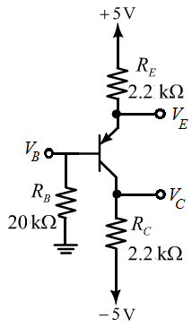

The common emitter current gain is.
The loop equation of the given circuit is
.
The base current is,
Substitute the given value of  .
.
Thus the loop equation is,
Consider the transistor circuit is shown in Figure 1.

Figure 1
The common emitter current gain is.
The loop equation of the given circuit is
.
The base current is,
Substitute the given value of .
Thus the loop equation is,
The base voltage of the transistor is,
Thus , the base voltage of the transistor is  .
.
The emitter voltage of the transistor is,
Thus , the emitter voltage is .
The collector voltage of the transistor is,

Thus , the collector voltage is .
.
The base-emitter voltage is given by
Thus, the transistor is operating in the active mode.
The collector resistance is given by
.
The collector voltage is given by
The maximum collector current is given by
Thus the collector resistance is given by
Thus the largest value of collector resistance is
.